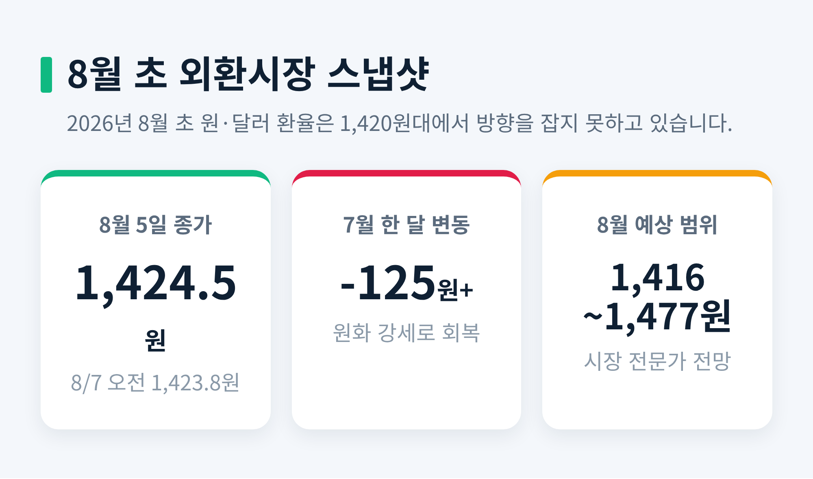
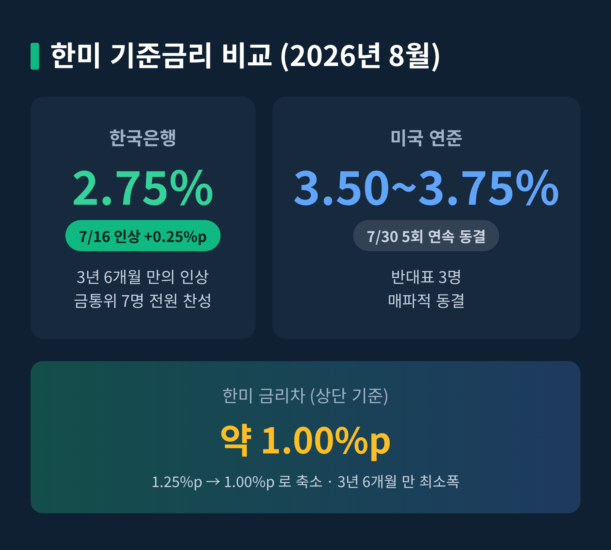
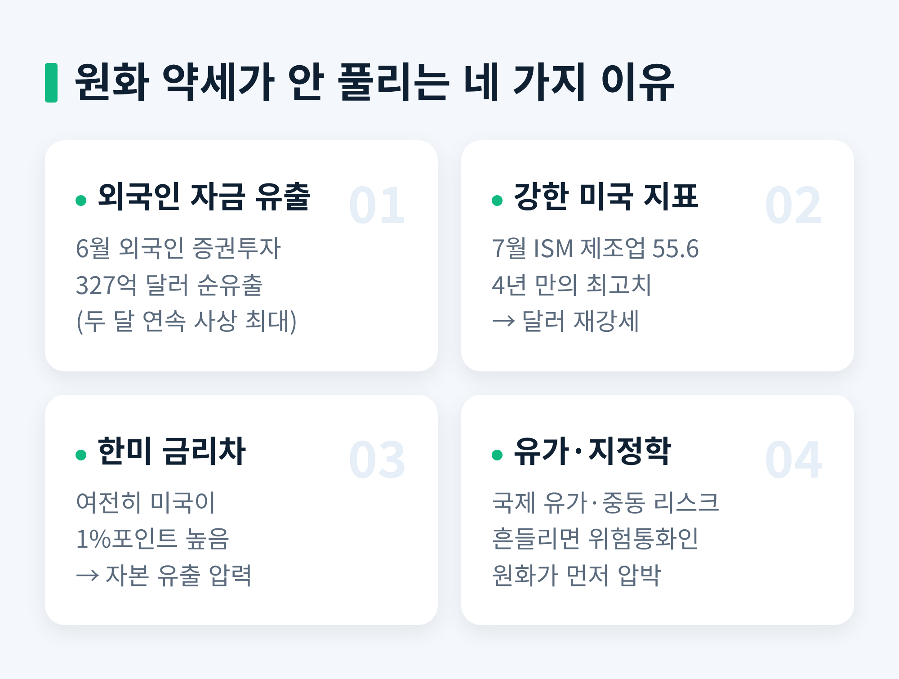
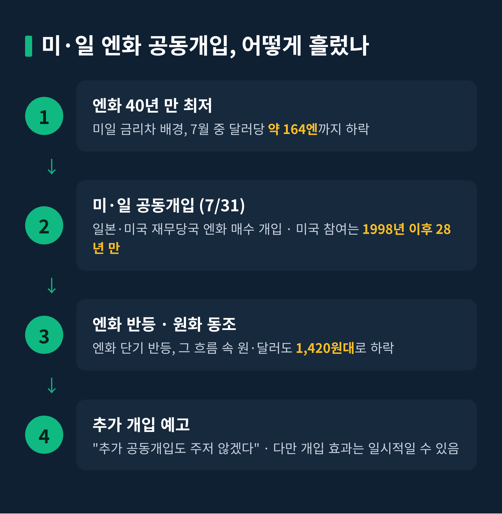
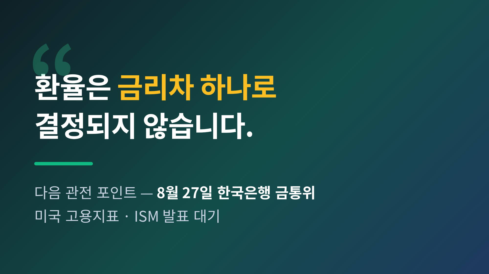

원달러 환율 1420원대 고착, 왜 원화 약세가 안 풀리나 — 한미 금리차와 8월 외환시장

이번 글에서는 8월 초 원·달러 환율이 왜 1,420원대에서 좀처럼 내려오지 않는지 정리해 보겠습니다.
한 줄 요약부터 드리겠습니다. 원화는 7월에 크게 회복했습니다. 그런데 8월 들어 1,420원대에서 발이 묶였습니다. 한국은행의 금리 인상도, 미·일 공동개입도 있었는데 말이지요. 그 이유를 하나씩 살펴봅니다.
8월 초, 지금 환율은 어디쯤 있나
2026년 8월 5일 서울외환시장에서 원·달러 환율은 전일보다 8.0원 내린 1,424.5원에 마감했습니다.
8월 7일 오전에도 1,423.8원 안팎에서 오르내렸습니다.
눈여겨볼 대목은 흐름입니다. 7월 한 달간 환율은 125원 넘게 떨어졌습니다. 원화가 그만큼 강해졌다는 뜻입니다.
예전엔 1,500원을 위협하던 환율이었습니다. 지금은 1,420원대에서 숨을 고릅니다.
시장은 8월 변동 범위를 1,416원에서 1,477원 사이로 열어두고 있습니다. 방향을 정하지 못한 채 대외 변수를 기다리는 국면입니다.
다시 말해 지금은 '내려온 뒤의 정체'입니다. 급락도, 급등도 아닌 어정쩡한 균형이 8월 초 외환시장의 표정입니다. 그래서 작은 지표 하나에도 시장이 예민하게 반응합니다.

왜 중요한가 — 환율은 물가와 지갑을 흔든다
환율이 높으면 수입 물가가 오릅니다. 기름값, 원자재값, 해외여행 경비가 함께 움직입니다.
기업에는 양면입니다. 수출 기업은 원화로 환산한 실적이 늘어 유리합니다. 반대로 원자재를 사 오는 기업과 소비자에게는 부담이 커집니다.
가계로 좁혀 보면 체감은 더 직접적입니다. 해외 직구, 항공권, 유학 송금처럼 달러로 지불하는 지출이 모두 무거워집니다.
무엇보다 1,420원대는 평시 기준으로 여전히 높은 자리입니다. 코로나 이전에는 1,100~1,200원대가 익숙했으니까요.
그래서 "왜 안 내려오나"라는 질문은 곧 "생활비 부담이 언제 풀리나"라는 질문이기도 합니다.
어디서 왔나 — 1,500원까지 갔던 궤적
지금의 1,420원대를 이해하려면 지난 흐름을 짚어야 합니다.
원화는 2025년을 1,466.6원으로 시작했습니다. 그해 4월에는 관세 이슈로 1,481원까지 밀렸다가, 6월 말에는 1,350원까지 되돌아왔습니다.
문제는 2026년 봄이었습니다. 3월 초 중동 지정학 리스크가 격화되며 환율은 1,500원을 뚫었습니다. 서울장에서 1,510원을 넘었고, 이는 2009년 글로벌 금융위기 이후 가장 높은 수준이었습니다.
당시 한국은행은 긴급 태스크포스까지 소집했습니다.
그 정점과 비교하면 지금의 1,420원대는 분명 내려온 자리입니다. 하지만 평시 기준으로는 여전히 높은, 이른바 '고착' 구간에 머물러 있는 셈입니다.
한미 금리차 — 좁혀졌지만, 아직 미국이 높다
핵심 배경은 한국과 미국의 금리 차이입니다.
한국은행은 2026년 7월 16일 기준금리를 연 2.50%에서 2.75%로 0.25%포인트 올렸습니다. 금융통화위원 7명 전원 찬성이었고, 2023년 1월 이후 3년 6개월 만의 인상입니다.
인상 이유는 세 가지로 요약됩니다. 수출과 투자 중심의 성장세, 목표치를 웃도는 물가, 그리고 지속되는 금융안정 리스크입니다.
반면 미국 연방준비제도는 7월 30일 기준금리를 3.50~3.75%로 다섯 번 연속 동결했습니다.
그 결과 한미 금리차는 상단 기준 1.25%포인트에서 1.00%포인트로 줄었습니다. 3년 6개월 만의 최소폭입니다.
다만 방향은 엇갈립니다. 금리차가 좁혀지면 원화를 빌려 달러에 투자하는 유인이 약해져 원화에 우호적입니다. 그러나 여전히 미국 금리가 1%포인트 높다는 사실은, 외국인 자금을 밖으로 끌어당기는 힘으로 남습니다.

원화 약세가 안 풀리는 네 가지 이유
금리차만으로는 다 설명되지 않습니다. 네 가지 힘이 겹쳐 있습니다.
첫째, 외국인 자금 유출입니다. 2026년 6월 외국인 증권투자는 327억 달러 넘게 순유출됐습니다. 두 달 연속 사상 최대 규모였습니다.
둘째, 강한 미국 경제지표입니다. 7월 미국 ISM 제조업 지수는 55.6으로 4년 만의 최고를 기록했습니다. 미국 경제가 튼튼하다는 신호가 나올수록 달러는 강해집니다.
셋째, 금리차라는 구조적 압력입니다. 앞서 본 1%포인트의 격차가 여기서도 작동합니다.
넷째, 유가와 지정학 리스크입니다. 국제 유가가 흔들리면 위험 통화인 원화가 먼저 압박을 받습니다.
특히 둘째와 넷째는 서로 맞물립니다. 유가가 오르면 물가 우려로 달러가 강해지고, 강달러는 다시 원화를 끌어내립니다. 하나의 원인이 다른 원인을 부르는 구조입니다.
이 네 가지가 서로를 떠받치기에, 한 번의 금리 인상만으로는 흐름이 쉽게 뒤집히지 않습니다.
물론 모든 힘이 한 방향인 것은 아닙니다. 7월의 원화 강세가 보여주듯, 수급이 우호적으로 바뀌면 환율은 빠르게 방향을 틀기도 합니다. 문제는 그 반전이 얼마나 오래 이어지느냐입니다.

미·일 엔화 공동개입이라는 변수
8월 환율을 이야기하며 빼놓을 수 없는 사건이 있습니다.
엔화는 미일 금리차를 배경으로 7월 중 달러당 164엔 안팎까지 떨어졌습니다. 약 40년 만의 최저였습니다.
이에 일본 정부와 미국 재무부가 7월 31일부터 엔화를 사들이는 공동개입에 나섰습니다. 미국이 엔화 매수에 직접 참여한 것은 1998년 이후 28년 만입니다.
개입 이후 엔화가 반등했고, 그 흐름 속에서 원·달러도 1,420원대로 내려왔습니다.
두 나라 재무 당국은 "추가 공동개입도 주저하지 않겠다"고 했습니다. 뱅크오브아메리카는 달러당 149엔까지 엔화가 강해질 수 있다고 봤습니다.
다만 한 가지는 짚어야 합니다. 개입이 원화에 준 영향은 간접적이고, 개입 효과는 대체로 일시적이라는 점입니다.
환율을 볼 때 개입은 방향 자체를 바꾸는 힘이라기보다, 흐름의 속도를 늦추는 브레이크에 가깝습니다. 브레이크가 풀리면 원래의 힘이 다시 드러납니다.

앞으로, 무엇을 볼까
단기적으로 시장은 1,420원대 등락을 기본 시나리오로 봅니다. 8월 미국 고용지표와 ISM 발표가 다음 방향타입니다.
통화정책도 관건입니다. 다음 한국은행 금융통화위원회는 2026년 8월 27일에 열립니다. 7월 인상에 이어 연속 인상에 나설지가 초점입니다.
구조적으로는 외국인 자금의 방향 전환, 강달러의 지속성, 유가와 지정학 리스크가 핵심 축으로 남습니다.
한 가지는 분명합니다. 환율이 높게 유지되는 동안에는 수입 물가와 가계의 체감 부담이 쉽게 가라앉지 않습니다. 정책 당국이 외환시장을 예의주시하는 이유도 여기에 있습니다.
환율은 금리차 하나로 결정되지 않습니다. 연준의 정책, 글로벌 달러 흐름, 수출업체의 물량까지 복잡하게 얽혀 있습니다.

정리하면 이렇습니다.
원화는 정점에서는 분명히 내려왔습니다. 그러나 금리차, 자금 유출, 강달러, 지정학이라는 네 겹의 벽이 1,420원대에 발을 묶어 두고 있습니다.
어느 하나가 풀린다고 곧바로 환율이 내려오지는 않습니다. 네 겹의 벽이 함께 낮아질 때, 비로소 흐름이 바뀔 것입니다. 그래서 지금은 어느 한 지표보다 전체 균형을 읽는 눈이 필요합니다.
여러 힘의 균형에서 나온다."
8월 말 금통위와 미국 지표가 그 균형을 어느 쪽으로 기울일지, 차분히 지켜볼 일입니다.